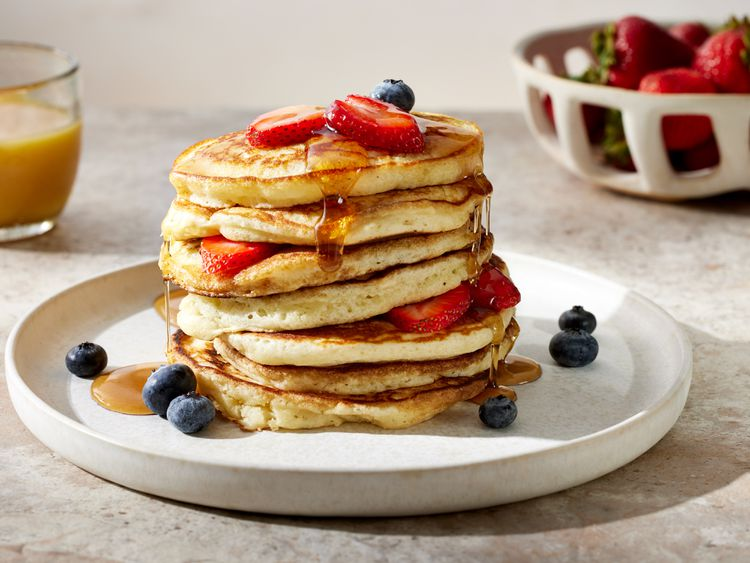

Home
Fluffy Pancakes

Need a fluffy pancake recipe? This one is just right, especially when there's plenty of butter and syrup. Make it extra special with berries and cream!
Ingredients
- ¾ cup milk
- 2 tablespoons white vinegar
- 1 cups all-purpose flour
- 2 tablespoon white sugar
- ½ teaspoons baking powder
- ½ teaspoon salt
- 1 egg
- 2 tablespoons butter, melted
- cooking spray
Steps
- Gather all ingredients.
- Combine milk and vinegar in a medium bowl and set aside for 5 minutes to make sour milk
- Combine flour, sugar, baking powder, baking soda, and salt in a large mixing bowl
- Whisk egg and butter into soured milk
- Pour flour mixture into milk mixture and whisk until lumps are gone
- Heat a large skillet over medium heat, and coat it with cooking spray. Pour 1/4 cupfuls of batter onto the skillet, and cook until bubbles form and the edges are dry, about 2 to 3 minutes
- Flip with a spatula, and cook until browned on the other side. Repeat with remaining batter.